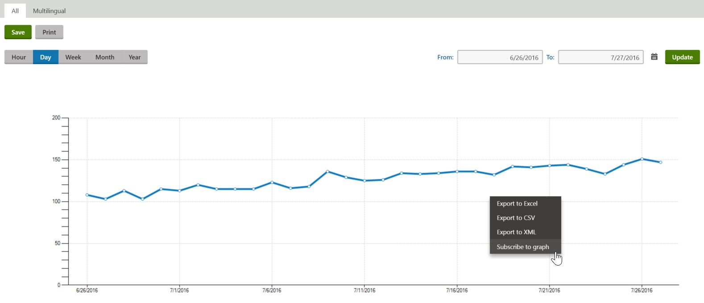
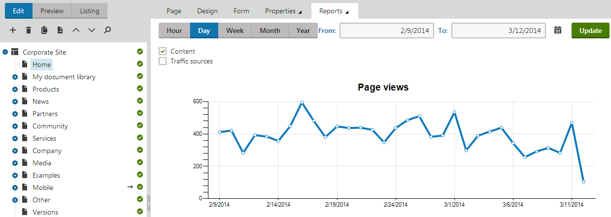

Viewing web analytics reports
You can view and analyze the data logged by web analytics using reports in the Web analytics application.
Navigate between the reports using the tree menu.
Using the Web analytics dashboard
The first item in the web analytics tree is a widget dashboard page, which you can personalize according to your requirements. The dashboard allows you to quickly access graphs or tables from your favorite statistics and view side-by-side comparisons. To add items to your dashboard:
Click Add new widget.
Select the Analytics chart viewer or Analytics table viewer widget from the Reporting category.
Configure the properties of the widgets to display the desired graph or table from a specific report.
When viewing a web analytics report, you can enter a time period into the From and To fields. The displayed data then only includes hits that were logged for the statistic during the specified interval.
The following options allow you to choose the unit of time used in the report:
Hour
Day
Week
Month
Year
This selection determines the length of time which is represented by individual units in the report's graphs (if there are any) and the precision that can be specified in the From and To fields.

Viewing a web analytics report
You can perform the following actions for reports:
Save – saves the report in its current state (according to the selected time interval). To view saved reports at a later time, open the Reporting application, select the matching report under the Web analytics category and switch to the Saved reports tab.
Print – allows the report to be printed. The available options depend on the used browser.
It is also possible to subscribe to a specific reporting component (graph or table) by right-clicking on it and selecting the Subscribe to option in the menu.
Subscribe to graph – allows users to periodically receive emails with the up-to-date content of the given graph.
The data displayed in the reports may also be exported into external files using various formats. To export the report data, right-click on a graph or table within the report and select one of the following export options:
Export to Excel – exports the data displayed by the given object to an XLSX spreadsheet.
Export to CSV – exports data to a CSV file.
Export to XML – exports data to an XML file.
After you select an action from the menu, your browser's standard file download dialog opens, letting you view or save the file with the exported data.
See also: Exporting data from the user interface
Reference - Web analytics site reports
By default, you can view reports that track the following statistics and events for your website:
|
Visitors |
|
|
Countries |
This statistic shows from which countries visitors access the website. The countries are recognized according to the IP addresses of visitors, which may not be 100% reliable in all cases, but the overall statistics for a high number of visits should provide correct results. |
|
Registered users |
Displays the total amount of new users that registered on your website during the specified time period, as well as the names and IDs of individual users. |
|
Mobile devices |
Displays the number of visitors who accessed the website using a mobile device. The report also provides a comparison between the number of mobile and standard visits, as well as detailed statistics for individual types of mobile devices. |
|
Search crawlers |
Displays the number of pages that were visited by search engine web crawlers (robots). Statistics are also provided for individual types of crawlers. Tracking is only done for crawlers whose user agent is specified for one of the search engines registered in the system. See also: Monitoring traffic from search engines |
|
Visitors |
Displays the number of unique visits on the website that occurred over the specified time period. A single visit includes any number of page views or other actions performed by a specific user during one session. Also displayed is the ratio between the number of new and returning visitors. A visitor is considered as returning after being inactive for the amount of minutes specified in the Settings -> On‑line marketing -> Web analytics -> Visitor idle time (minutes) setting. Visitors are recognized according to the presence of a browser cookie. Visitors may additionally be tracked according to their IP address. To enable this functionality, enter a value greater than 0 into the Remember visitors by IP (minutes) setting. This ensures that the system remembers visitors for the specified number of minutes even if their browser does not save cookies. |
|
Traffic sources |
|
|
All traffic sources |
Displays the number of page views that the website received, categorized according to the type of the traffic source. Three different types of sources are tracked:
References from the website's local pages (e.g. navigation menus) are not included in this statistic. |
|
Referrals |
Lists the full URLs of external pages from which visitors followed links to your website. You can also see the number of page views gained from each referring URL. Note: Referrals do not include search engine result pages. The system excludes all URLs that match the Domain rule of one of the search engines defined in the Search engines application. |
|
Referring sites |
Displays the total amount of page views gained through links from external websites. You can view the statistics for individual website domains. Note: Referring sites do not include search engines. The system excludes all websites whose URLs match the Domain rule of one of the search engines defined in the Search engines application. |
|
Search engines |
Displays the amount of page views generated by visitors who found the website through a search engine, as well as the statistics of individual engines. See also: Monitoring traffic from search engines |
|
Search keywords |
Displays which keywords were entered into search engines in order to find the website and the amount of page views generated by individual keywords. Note: Keyword data is not available for most major search engines (modern search engines do not provide publicly available keywords in their referring links). |
|
Content |
|
|
Aggregated views |
This statistic tracks access to pages via links in RSS or Atom feeds created using the Kentico syndication functionality. The All tab displays the total number of pages viewed through feeds, as well as the statistics of individual pages. The Multilingual tab contains the same type of data, but page views are categorized and displayed separately according to the content culture of the given pages. |
|
File downloads |
Displays the number of files downloaded by website visitors and the statistics for individual files. On the All tab, the total statistics are shown for all files regardless of their assigned content culture. The Multilingual tab contains the same type of data, but the number of downloads for files belonging to different content cultures is tracked and displayed separately. Please note that only files stored as pages in the website's content tree are tracked. |
|
Invalid pages |
Tracks page requests that contain the website's domain name, but specify a path to a page that does not exist. The total amount of invalid requests logged during the specified time period can be viewed, and the paths and statistics of individual requests are also displayed. |
|
On-site search keywords |
Displays the total number of searches that were performed using the website's local search functionality and the keywords that were entered. |
|
Top landing pages |
Displays which pages are the first ones viewed by visitors when they start their browsing session on the website. On the All tab, all culture versions of particular landing pages are tracked together as a single page. The Multilingual tab may be used to view separate statistics for individual page versions that belong to different content cultures. |
|
Top exit pages |
Keeps track of the final pages that were visited by users when their browsing session ended. On the All tab, all culture versions of particular exit pages are tracked together as a single page. The Multilingual tab may be used to view separate statistics for individual page versions that belong to different content cultures. |
|
Banner clicks |
Shows how many times users have clicked individual banners on the website. See also: Monitoring banner statistics |
|
Banner impressions |
Shows how many times users have seen individual banners. See also: Monitoring banner statistics |
|
Page views |
Monitors how many times the website's pages were viewed by visitors. On the All tab, the displayed data includes the total amount of views for the entire website, and specific information for individual pages. If a page is available in multiple content cultures, the view count of all its versions is added together and tracked as a single page. The Multilingual tab contains the same type of data, but the views of pages that belong to different content cultures are tracked and displayed separately. Only pages that are served by Kentico are included in the statistics. |
|
Browser capabilities |
|
|
Browser types ___ |
This statistic shows what browsers are used by visitors to view the website. The name and version number of each visitor's browser is logged. |
|
The statistics below can only be tracked for visitors who access a page that contains the Analytics browser capabilities web part. |
|
|
Flash support |
Tracks if the browsers used by visitors support viewing of Flash animations and videos. |
|
Java support |
Tracks if the browsers used by visitors support Java applets. |
|
Operating system |
This statistic logs which operating systems are used by the website's visitors. |
|
Silverlight support |
Tracks if the browsers used by visitors support Microsoft Silverlight. |
|
Screen colors |
Tracks the color depth that can be displayed in the visitors' browsers. |
|
Screen resolution |
Logs the screen resolution used by the website's visitors. |
Tracking browser capabilities
If you wish to log detailed browser information other than the type and version, you need to add the Analytics browser capabilities web part onto the page. You can choose which statistics the system track by configuring the properties of the web part.
This web part utilizes JavaScript to collect the necessary data, which may in some cases interfere with other scripts on the page, so it is up to the website's developers to determine where it should be located.
To provide the most accurate statistics, it is recommended to place the web part on a page that most visitors pass through, such as the website's default page or a frequently used landing page.
Viewing reports for specific pages
You can view the values of web analytics statistics measures for individual pages on the website.
Open the Pages application.
Select the page that you want to examine.
Switch to the Analytics -> Reports tab.

Viewing analytics for a specific page
You can specify a time interval for the reports and export their data just like when using the Web analytics application.
The reports for each page are divided into two categories:
|
Content |
|
|
Page views |
Shows how many times the given page was accessed by the website's visitors during the specified time interval. |
|
Average time on page |
Displays the average time that visitors spend viewing the given page (measured in seconds). |
|
Landing page |
Counts how many times the given page served as a landing page for the website's visitors. A landing page is the first page viewed when a visitor starts their browsing session on the website. |
|
Exit page |
Counts how many times the page was an exit page for a visitor. An exit page is defined as the last page visited by a user before their browsing session ended. |
|
Traffic sources |
|
|
Traffic sources |
Displays the statistics of the traffic sources that generated the page views. Four different types of sources are tracked:
|
|
Search engines |
This table contains the names of the search engines that visitors used to find the given page and the amount of page views generated by each engine. See also: Monitoring traffic from search engines |
|
Search keywords |
Contains the keywords that were entered into search engines in order to find the page and the page view statistics of individual keywords. |
|
Referring sites |
Displays the domain names of external sites from which visitors were linked to the given page. You can view the statistics for individual sites. Note: Referring sites do not include search engines. The system excludes all websites whose URLs match the Domain rule of one of the search engines defined in the Search engines application. |
|
Referring local pages |
Contains the alias paths of the local website's pages from which visitors were linked to the given page and the amount of views gained from each page. |
|
Crawlers |
Shows how many times and how recently the page was visited by search engine web crawlers (robots). Tracking is only done for crawlers whose user agent is specified for one of the search engines registered in the system. See also: Monitoring traffic from search engines |